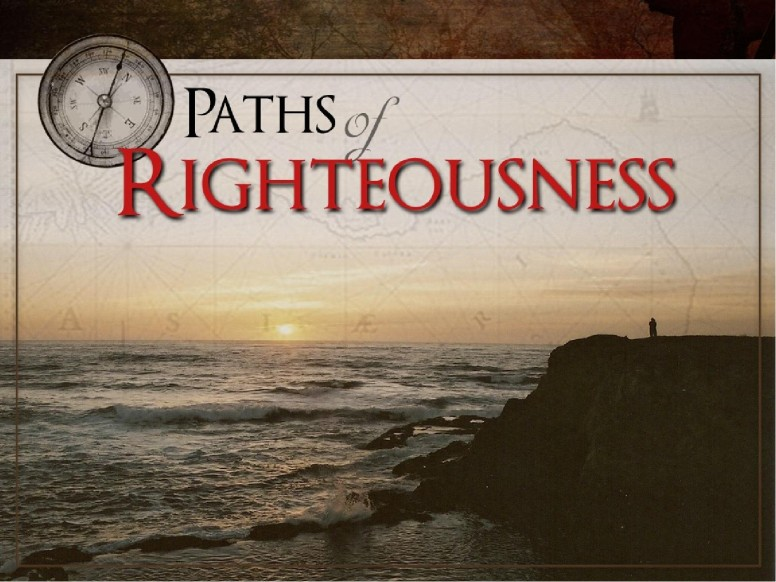

The Inheritance of every believer
Believers can Count on an Inheritance on Earth and in Heaven
One night God came to Abraham in a vision. He brought him outside and said, "Look now toward heaven, and count the stars
if you are able to number them." And He said to him, "So shall your descendants be." Then God said, "I am the LORD,
who brought you out of Ur of the Chaldeans, to give you this land to inherit it." (Genesis 15:5, 7)
God promised Abraham a massive area of fertile and abundant land to be his inheritance, to pass on to his progeny. After Joshua
led Israel in many conquests, the land was divided and distributed to each of the 12 tribes. However, what they acquired overall
was much smaller than God had originally promised Abraham. Nevertheless, Joshua divided the land and gave each

tribe their inheritance, an area of land with definite boundaries. When the word inheritance is used in the Old Testament, it most
often refers to an area of land, passed down from generation to generation.
In the New Testament, future rewards are mentioned but not specified and five crowns are referred to but not described.
1 Corinthians 3:8 states that "each one will receive his own reward according to his own labor." 2 John 2:8 exhorts believers
to "Look to yourselves, that we do not lose those things we worked for, but that we may receive a full reward."
It is not exactly clear what kind of reward or crown will be significant in the third heaven and earth. The promise of an
inheritance is mentioned several times, but exactly what it is is obscured. However, Romans 8:17 says that children of God are
joint heirs with Christ, which means that Christians share all of what Jesus has.
This spiritual inheritance is used as motivation for obedient Christian service. It is also used as something that can be
forfeited due to disobedience. "And whatever you do, do it heartily, as to the Lord and not to men, knowing that from
the Lord you will receive the reward of the inheritance; for you serve the Lord Christ." (Colossians 3:23, 24)
The Bible clearly identifies behaviors and lifestyles to avoid. "Do you not know that the unrighteous will not inherit
the kingdom of God? Do not be deceived. Neither fornicators, nor idolaters, nor adulterers, nor homosexuals, nor sodomites,
nor thieves, nor covetous, nor drunkards, nor revilers, nor extortioners will inherit the kingdom of God."
(1 Corinthians 6:9, 10)
These are not one-time offenses, but habitual practices. Set in stark contrast to the fruit of the Spirit in Galatians 5
are the works of the flesh. "Now the works of the flesh are evident, which are: adultery, fornication, uncleanness, lewdness,
idolatry, sorcery, hatred, contentions, jealousies, outbursts of wrath, selfish ambitions, dissensions, heresies, envy,
murders, drunkenness, revelries, and the like; of which I tell you beforehand, just as I also told you in time past, that
those who practice such things will not inherit the kingdom of God." (Galatians 5:19-21) Again, these are not
occasional slip-ups, but chronic behavioral patterns.
The believer's inheritance is guaranteed, waiting to be presented for faithfulness and obedience to the Word of God. "Blessed
be the God and Father of our Lord Jesus Christ, who according to His abundant mercy has begotten us again to a living hope
through the resurrection of Jesus Christ from the dead to an inheritance incorruptible and undefiled and that does not fade
away, reserved in heaven for you." (1 Peter 1:3, 4)
Perhaps no scriptures in the New Testament are more electrifying than Ephesians. Having been redeemed through the blood of
Jesus Christ, the believer's future is assured, and the proof of that is the reality of the presence of the Holy Spirit
in a Christian's life right now. "In Him also we have obtained an inheritance, being predestined according to the purpose
of Him who works all things according to the counsel of His will, that we who first trusted in Christ should be to the
praise of His glory. In Him you also trusted, after you heard the word of truth, the gospel of your salvation; in whom also,
having believed, you were sealed with the Holy Spirit of promise, who is the guarantee of our inheritance until the redemption
of the purchased possession, to the praise of His glory." (Ephesians 1:12- 14)
Whatever it is that God the Father has in store must be spectacular, and Hebrews 1:2 states that He has appointed Jesus as
heir of all things that believers are destined to share fully. While it may not be presently comprehensible, there is something
very special awaiting the faithful. "He who overcomes shall inherit all things, and I will be his God and he shall be My son."
(Revelation 21:7)